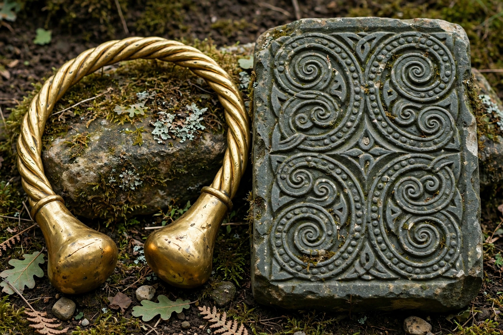

Celts
From Wikipedia, the free encyclopedia

The Celts were a diverse group of peoples in Europe and Anatolia who spoke Celtic languages and shared related material cultures, flourishing from the Iron Age (c. 800 BC) and reaching their greatest extent by the third century BC — from Iberia and Ireland to the Balkans and central Turkey (Galatians). Conquered piecemeal by Rome and later by Germanic and other peoples, Celtic languages survive today in Ireland, Scotland, Wales, Brittany, Cornwall and the Isle of Man.
Archaeology and identity
Classical writers (Herodotus, Caesar) located Keltoi beyond the Alps; archaeology associates early Celts with the Hallstatt culture (c. 800–450 BC) and the art-rich La Tène culture that followed. Hillforts, princely burials (such as Hochdorf), oppida towns and distinctive metalwork mark their world. Modern scholarship debates how far 'the Celts' were a single people versus a label imposed by Greeks, Romans and eighteenth-century antiquarians — though shared languages and art styles imply real networks.
Society and warfare
Celtic societies were tribal, led by kings and warrior aristocracies, with druids as a learned priestly class, famous from Caesar's account. Celtic mercenaries served across the Mediterranean; Gallic tribes sacked Rome in 390 BC and invaded Greece in 279 BC. Rome conquered Cisalpine Gaul, then Julius Caesar's Gallic Wars (58–50 BC) subdued Gaul — commemorated in the resistance of Vercingetorix — and Britain followed from AD 43. Ireland and northern Scotland were never conquered by Rome.
Survival and revival
Celtic culture endured most strongly at Europe's Atlantic fringe: Irish and Welsh medieval literature preserved Celtic mythology, and the modern Celtic nations maintain languages now revived through education and media (Welsh most successfully). The 'Celtic' brand — music, design, spirituality — is a major element of regional identity and tourism from Galway to Galicia, itself partly a Romantic-era reinvention.